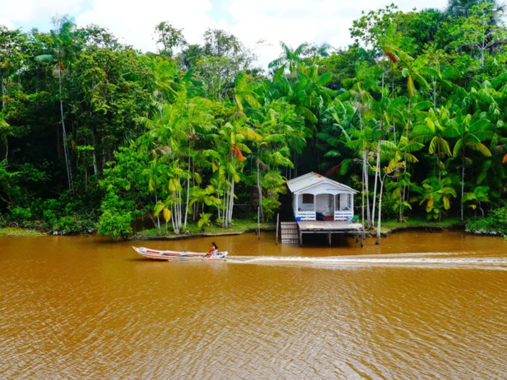

Amapá é um estado no norte do Brasil que faz fronteira com o Suriname, a Guiana Francesa e o Oceano Atlântico. A floresta amazónica abrange uma grande parte da sua área e o rio Oiapoque faz parte da sua fronteira a norte. No sul, a capital, Macapá, é conhecida pela Fortaleza de São José de Macapá, situada à beira-mar, um forte português do século XVIII, e pelo Monumento do Marco Zero, um obelisco que marca o equador.

Voltar